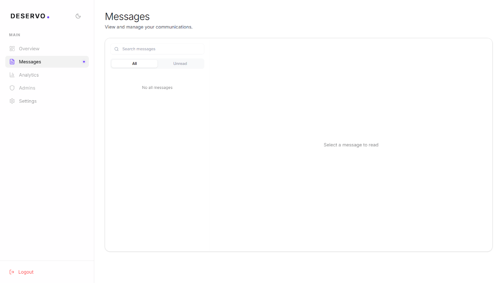
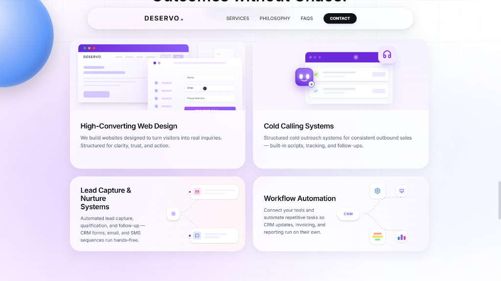
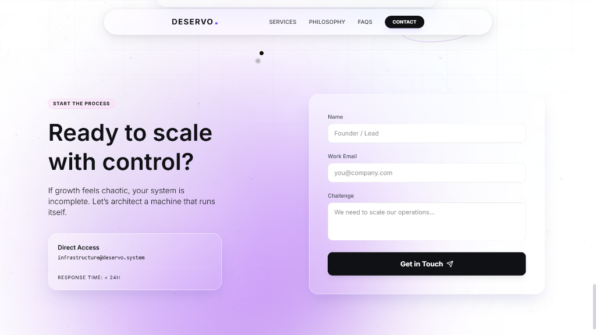

Overview
Deservo is a high-conversion business website designed to represent a growth infrastructure company focused on operational efficiency and scalable systems. The project focuses on building a modern digital presence that clearly communicates Deservo’s philosophy: engineering growth systems that reduce operational drag and help founders scale with control.
The website combines clean interface design, strong messaging hierarchy, and structured user journeys to guide visitors from curiosity to action. The goal was not just to build a visually appealing website, but to create a strategic digital platform capable of converting visitors into qualified leads.
My Perspective
When designing Deservo's website, I approached it from a product and systems perspective rather than just a visual design project.
Instead of thinking of the site as a simple marketing page, I treated it as a growth infrastructure interface that communicates the company’s philosophy and services clearly.
My focus was on:
- clarity of message
- strong visual hierarchy
- structured conversion flow
- modern UI aesthetics
- scalable page architecture
The objective was to create a website that feels engineered rather than decorative, reflecting the philosophy behind the Deservo brand.
Goals of the Project
The primary goals behind the Deservo website design were:
- Communicate Deservo’s philosophy of structured growth infrastructure
- Build a modern and premium visual identity for the brand
- Create clear service explanations that reduce visitor confusion
- Guide users naturally toward consultation requests
- Design a system that can scale as the company expands
The website was designed to function as both a brand identity platform and a lead generation engine.
Implementation
Visual Identity & Design System
The website uses a clean modern interface combined with gradient elements and soft geometric visuals to create a polished and futuristic brand aesthetic.
Key visual elements include:
- structured typography hierarchy
- gradient accent visuals
- minimalist layout design
- subtle motion and spatial balance
This creates a visual identity that feels professional, technical, and modern.
Conversion-Focused Layout
The page structure was designed around conversion psychology, ensuring that visitors quickly understand:
- what Deservo does
- why it matters
- what problems it solves
- how to get started
The layout includes sections that introduce services clearly while maintaining visual breathing room, making the website easy to scan and navigate.
Service Presentation System
The services section highlights the core infrastructure systems Deservo builds for businesses:
- High-Converting Web Design
- Cold Outreach Systems
- Lead Capture & Nurture Systems
- Workflow Automation
Each service card was designed to quickly communicate the value of each system while keeping the layout visually clean.
Lead Generation Interface
The website includes a structured inquiry system allowing visitors to submit project requests directly through a clean form interface.
This system collects:
- name
- work email
- company role
- operational challenge
The goal is to gather qualified leads instead of generic contact messages, improving the quality of potential client conversations.
What This Project Demonstrates
The Deservo website highlights my ability to design strategic websites that combine branding, UX design, and conversion systems.
This project demonstrates:
- modern UI/UX design skills
- brand-focused web design
- conversion-oriented layout strategy
- structured information architecture
- scalable website systems for growing companies
Rather than designing static websites, I focus on creating digital platforms that function as growth infrastructure for businesses.
Outcome
The final result is a clean, modern, and scalable website that reflects Deservo’s philosophy of engineered growth systems.
The project successfully transforms abstract ideas about operational efficiency and infrastructure into a clear and visually engaging digital experience.
It demonstrates how thoughtful design can communicate complex ideas while guiding users naturally toward taking action.
Screens


